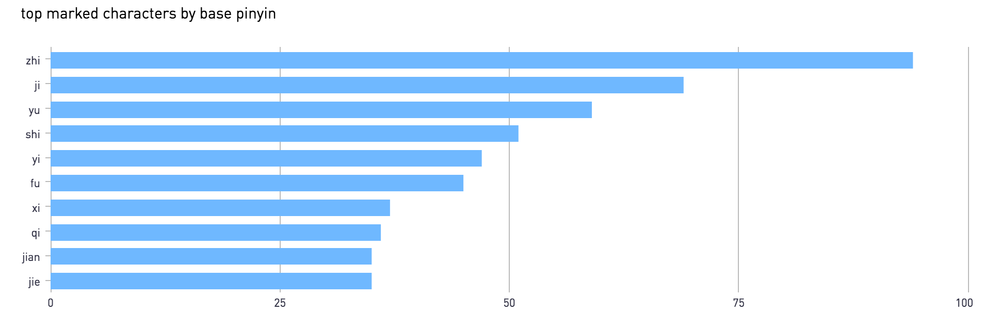

As of April 24th, 2019, I have read and tracked the Chinese versions of 20 New York Times articles. Looking at the data I have collected, I find that I frequently have trouble identifying characters pronounced zhi (all tones).
I’ve marked characters pronounced zhi 94 times, 36% more than the next highest pronounciation, ji:

Of these 94 marks, 79 come from a total of 13 (the same character can be marked more than once) characters ranked within the top 800 most frequently occurring characters :
| rank | entry | pinyin | marks |
|---|---|---|---|
| 163 | 制 | zhì | 3 |
| 261 | 指 | zhǐ | 3 |
| 274 | 治 | zhì | 1 |
| 404 | 质 | zhì | 12 |
| 437 | 支 | zhī | 5 |
| 524 | 致 | zhì | 14 |
| 542 | 志 | zhì | 6 |
| 578 | 织 | zhī | 3 |
| 596 | 止 | zhǐ | 5 |
| 600 | 值 | zhí | 5 |
| 616 | 职 | zhí | 4 |
| 677 | 置 | zhì | 9 |
| 763 | 执 | zhí | 12 |
Even those characters have different tones, I grouped them together because I find tones to be the hardest part of Chinese. Because there are so many characters in the Chinese language, when I learn a new character, I’m typically content with just knowing the pinyin without worrying about the exact tonal inflection. This is bad. It means I mix tones when speaking, which can lead to embarrassment. It also hurts my reading comprehension. This character is pronounced zhi? Awesome. I’m not sure what it means because a lot of characters are pronounced zhi, and I don’t have the benefit of a tone to differentiate it from the rest of the heap.
So, in order to learn both the meaning of these zhi characters as well as their tones, I’m doing what I always do when I want to learn something better: I’m writing about it.
I’m focusing on the 5 zhi characters I have marked the most: 质 致 志 执 置
Conveniently, 4 of these characters are pronounced using the 4th tone. Since most Chinese words consist of more than one character, it is often hard to assign single meanings to characters. Instead, I will be focusing on the common words which contain the character, grouping them together when possible.
As an aside, I recently learned a lot about the nature of Chinese characters , which I will touch on in a later post.
install 设置, 装置, 置装, 配置[deploy/allocate]
place, to be located at 置于, 归置
comment 置评
material/substance 物质, 人质[hostage], 特质[trait], 本质[nature]
quality 质量, 气质
question 质疑
致 is often paired with a noun which contains the main meaning of the word. send/deliver 致电[call], 致敬[pay tribute], 致命[lethal], 致命[fatal]
cause/incur 导致
dedication 致力
will/asipration/ambition 意志, 志愿者[volunteer], 斗志[fighting]
log/record 杂志[magazine], 标志[sign], 日志
hold/grasp
execute 执行, 执行官
stick to ones views 固执
law 执照[license], 执法
Here’s to hoping that future data reflects a great familiarity with these characters.